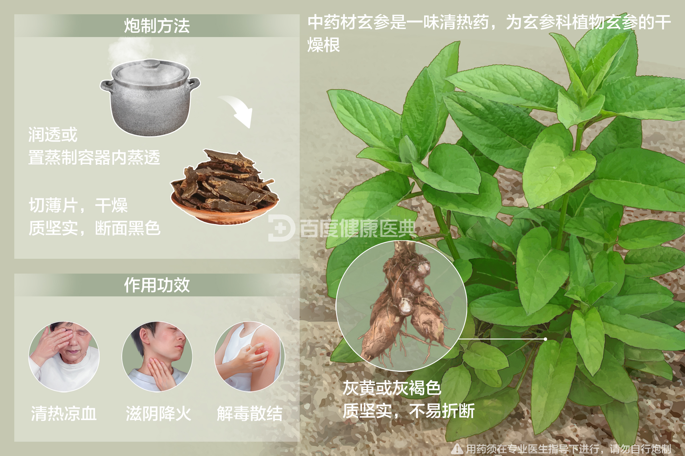
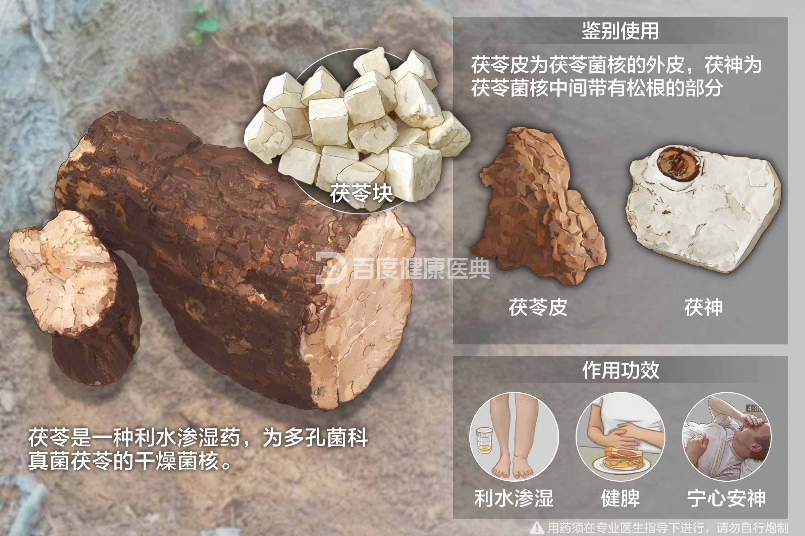
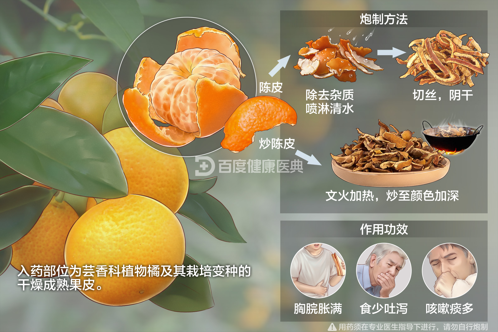
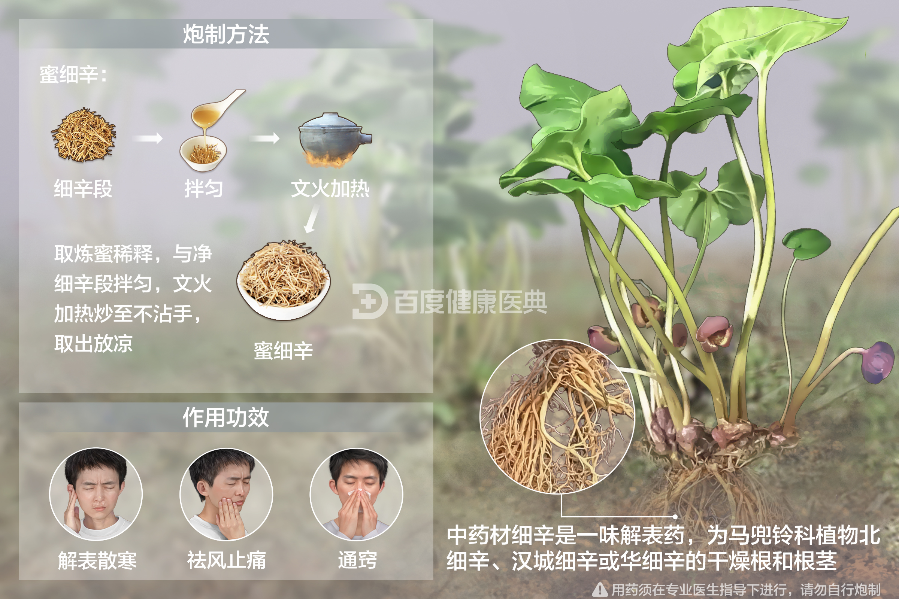
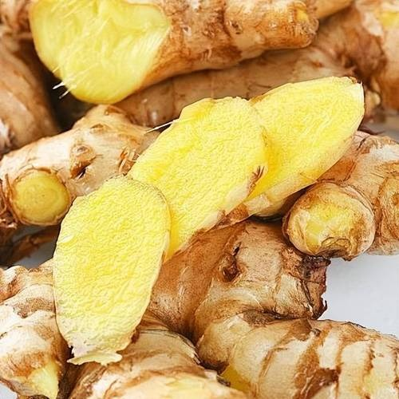
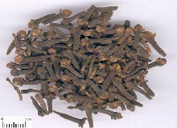

黄柏
清热燥湿、泻火解毒，常用于治疗湿热带下、湿疹等。
金银花
清热解毒、散风热，适用于外感风热、咽喉肿痛。
连翘
清热解毒、消肿散结，用于治疗疮疡肿毒、风热感冒。

贯众
清热解毒、凉血止血，用于治疗热毒血痢、吐衄。
蒲公英
清热解毒、消肿散结，适用于乳腺炎、急性扁桃体炎。
玄参
清热凉血、滋阴降火，用于治疗阴虚火旺、咽喉肿痛。
紫草
清热解毒、凉血止血，用于治疗疮疡肿毒、血热吐衄。
赤芍
清热凉血、散瘀止痛，适用于热病后期、瘀血疼痛。
牡丹皮
清热凉血、活血散瘀，用于治疗阴虚发热、月经不调。

白薇
清热凉血、解毒散瘀，用于治疗阴虚发热、疮疡肿毒。
地骨皮
清热凉血、退虚热，适用于阴虚潮热、盗汗。
罗布麻
清热解毒、利尿消肿，用于治疗热淋、水肿。
山药
补脾益肺、固肾涩精，适用于脾虚泄泻、肾虚遗精。
天麻
平肝息风、祛风胜湿，用于治疗眩晕、中风后遗症。
白术
健脾燥湿、安胎，适用于脾虚食少、胎动不安。
茯苓
利水渗湿、健脾宁心，适用于水肿、脾虚泄泻。


川芎
活血行气、祛风止痛，用于治疗头痛、胸痹。


干姜
温中散寒、回阳救逆，用于治疗脾胃虚寒、寒邪内侵。

陈皮
理气调中、燥湿化痰，用于治疗胸腹胀满、咳嗽痰多。
香附
疏肝理气、调经止痛，适用于肝郁气滞、月经不调。
细辛
祛风散寒、通鼻利窍，用于治疗风寒感冒、鼻塞不通。
生姜
发汗解表、温中止呕，适用于风寒感冒、胃寒呕吐。

辣椒
温中散寒、促进食欲，但过量食用可能刺激胃肠道。


仙茅
温肾助阳、祛寒湿，适用于肾阳不足、寒湿带下。
砂仁
理气和胃、安胎，适用于脾胃气滞、胎动不安。
丁香
温中散寒、止痛，用于治疗胃寒呕吐、腹痛。
桑寄生
祛风湿、强筋骨，适用于风湿痹痛、筋骨无力。